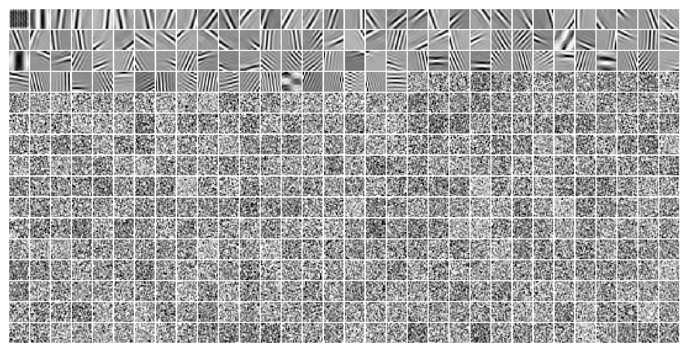

(06) DOVES—LapConv—0#
Motivation: Laplace + DOVES + Conv encoder. prior_fit = True. Device = cuda:0
Show code cell source
# HIDE CODE
import os, sys
from IPython.display import display
# tmp & extras dir
git_dir = os.path.join(os.environ['HOME'], 'Dropbox/git')
extras_dir = os.path.join(git_dir, 'jb-vae/_extras')
fig_base_dir = os.path.join(git_dir, 'jb-vae/figs')
tmp_dir = os.path.join(git_dir, 'jb-vae/tmp')
# GitHub
sys.path.insert(0, os.path.join(git_dir, '_PoissonVAE'))
from figures.fighelper import *
from vae.train_vae import *
# warnings, tqdm, & style
warnings.filterwarnings('ignore', category=DeprecationWarning)
from rich.jupyter import print
%matplotlib inline
set_style()
device_idx = 0
device = f'cuda:{device_idx}'
model_type = 'laplace'
Archi: <Conv|Lin>#
cfg_vae, cfg_tr = default_configs('DOVES', model_type, 'conv+b|lin')
cfg_vae['fit_prior'] = True
print(f"VAE:\n{cfg_vae}\n\nTrainer:\n{cfg_tr}")
VAE: {'dataset': 'DOVES', 'n_ch': 32, 'n_latents': 512, 'latent_act': None, 'fit_prior': True, 'enc_type': 'conv', 'dec_type': 'lin', 'enc_bias': True, 'dec_bias': False} Trainer: {'temp_anneal_portion': 1.0, 'temp_anneal_type': 'exp', 'temp_start': 1.0, 'temp_stop': 1.0, 'lr': 0.005, 'batch_size': 1000, 'epochs': 3000, 'optimizer_kws': {'weight_decay': 0.0}, 'grad_clip': 500}
vae = MODEL_CLASSES[model_type](CFG_CLASSES[model_type](**cfg_vae))
tr = TrainerVAE(vae, ConfigTrainVAE(**cfg_tr), device=device)
vae.print()
print(f"{vae.cfg.name()}\n{tr.cfg.name()}_({vae.timestamp})\n")
tr.show_schedules()
+-------------+------------+ | Module Name | Num Params | +-------------+------------+ | LaplaceVAE | 1.5 Mil | | --- | --- | | stem | 352 | | enc | 1.2 Mil | | fc_enc | 132.1 K | | fc_dec | 131.1 K | +-------------+------------+
laplace_None_prior-fit_DOVES_z-512_k-32_<conv+b|lin> mc_b1000-ep3000-lr(0.005)_beta(1:0x0.5)_temp(1:exp-1)_gr(500)_(2024_05_06,14:53)

vae.fc_dec.bias, vae.fc_enc.bias.shape
(None, torch.Size([1024]))
vae.loc.requires_grad
True
Train#
# comment = f"..._{tr.cfg.name()}"
comment = tr.cfg.name()
tr.train(comment=comment)
epoch # 3000, avg loss: 158.553232: 100%|█████████████████████| 3000/3000 [2:29:14<00:00, 2.98s/it]
Loss vld (freeze)#
data, loss, etc = tr.validate()
_loss = {k: v.mean() for k, v in loss.items()}
_loss['tot'] = _loss['mse'] + _loss['kl']
print(_loss)
{'mse': 107.908554, 'kl': 50.816753, 'kl_diag': 0.09871967, 'tot': 158.72531}
### Was: categorical with prior fit
{'mse': 165.39445, 'kl': 5.4255557, 'kl_diag': 5.414346, 'tot': 170.82}
### Was: fixed prior
{'mse': 165.01498, 'kl': 5.632016, 'kl_diag': 5.6216135, 'tot': 170.647}
Plot enc/dec weights#
vae.show(dpi=250, order=np.argsort(flatten_np(etc['scale'], start_dim=1).mean(0)));
### Was: fit_prior = False

Some more distributions#
tr.model.temp, tr.cfg.kl_beta
(tensor(1., device='cuda:0'), 1.0)
from figures.imgs import plot_weights
dead_thres = 0.1
try:
ind = np.where(loss['kl_diag'] < dead_thres)[0]
plot_weights(vae.fc_dec.weight.data.T.reshape(-1, 16, 16)[ind], nrows=16, dpi=110);
except ValueError:
pass
try:
ind = np.where(tonp(vae.log_scale.squeeze()) > 1)[0]
plot_weights(vae.fc_dec.weight.data.T.reshape(-1, 16, 16)[ind], nrows=1, dpi=15);
except ValueError:
pass
ax = sns.histplot(tonp(vae.log_scale.squeeze()))
ax.set(yscale='log');
sns.histplot(tonp(vae.loc.squeeze()), bins=np.linspace(-0.005, 0.005, 100));
Loggabor analysis#
dead_thres = 0.1
dead = loss['kl_diag'] < dead_thres
from analysis.loggabor import fit_loggabor
from figures.theta import plot_theta
from figures.imgs import plot_weights
results = fit_loggabor(tr, verbose=True)
5%|▌ | 25/512 [00:03<00:53, 9.09it/s]
warning: zero norm model with pars= Parameters([('x_pos', <Parameter 'x_pos', value=12.749939895011611, bounds=[0:16]>), ('y_pos', <Parameter 'y_pos', value=8.556391530835851, bounds=[0:16]>), ('theta', <Parameter 'theta', value=-0.5617169806166595, bounds=[-1.5707963267948966:1.5707963267948966]>), ('sf_0', <Parameter 'sf_0', value=0.289498529538169, bounds=[0.001:inf]>), ('phase', <Parameter 'phase', value=-1.5566134820457413, bounds=[-inf:inf]>), ('B_sf', <Parameter 'B_sf', value=0.1102424246767223, bounds=[0.001:inf]>), ('B_theta', <Parameter 'B_theta', value=0.045196998026145185, bounds=[0.001:inf]>)])
6%|▋ | 30/512 [00:04<01:20, 5.98it/s]
warning: zero norm model with pars= Parameters([('x_pos', <Parameter 'x_pos', value=3.8567112225253215, bounds=[0:16]>), ('y_pos', <Parameter 'y_pos', value=10.032519703707907, bounds=[0:16]>), ('theta', <Parameter 'theta', value=1.1105082139066833, bounds=[-1.5707963267948966:1.5707963267948966]>), ('sf_0', <Parameter 'sf_0', value=0.19900006030882322, bounds=[0.001:inf]>), ('phase', <Parameter 'phase', value=1.2833734193640383, bounds=[-inf:inf]>), ('B_sf', <Parameter 'B_sf', value=0.11474188760485349, bounds=[0.001:inf]>), ('B_theta', <Parameter 'B_theta', value=0.04290381074498095, bounds=[0.001:inf]>)])
8%|▉ | 39/512 [00:06<01:14, 6.33it/s]
warning: zero norm model with pars= Parameters([('x_pos', <Parameter 'x_pos', value=8.559578188159337, bounds=[0:16]>), ('y_pos', <Parameter 'y_pos', value=11.406694794732331, bounds=[0:16]>), ('theta', <Parameter 'theta', value=-0.9963923835045538, bounds=[-1.5707963267948966:1.5707963267948966]>), ('sf_0', <Parameter 'sf_0', value=0.3192913531272624, bounds=[0.001:inf]>), ('phase', <Parameter 'phase', value=-2.758460172130322, bounds=[-inf:inf]>), ('B_sf', <Parameter 'B_sf', value=0.22240312620845903, bounds=[0.001:inf]>), ('B_theta', <Parameter 'B_theta', value=0.05307356332362556, bounds=[0.001:inf]>)])
9%|█ | 46/512 [00:06<00:57, 8.15it/s]
warning: zero norm model with pars= Parameters([('x_pos', <Parameter 'x_pos', value=7.774633577393065, bounds=[0:16]>), ('y_pos', <Parameter 'y_pos', value=12.114482992731043, bounds=[0:16]>), ('theta', <Parameter 'theta', value=-0.4618150592637449, bounds=[-1.5707963267948966:1.5707963267948966]>), ('sf_0', <Parameter 'sf_0', value=0.19811892884457605, bounds=[0.001:inf]>), ('phase', <Parameter 'phase', value=1.5002998560047365, bounds=[-inf:inf]>), ('B_sf', <Parameter 'B_sf', value=0.1277499514828343, bounds=[0.001:inf]>), ('B_theta', <Parameter 'B_theta', value=0.05290388366857546, bounds=[0.001:inf]>)])
14%|█▋ | 72/512 [00:10<00:28, 15.37it/s]
warning: zero norm model with pars= Parameters([('x_pos', <Parameter 'x_pos', value=7.6203813982898145, bounds=[0:16]>), ('y_pos', <Parameter 'y_pos', value=5.842521368566937, bounds=[0:16]>), ('theta', <Parameter 'theta', value=1.319631857053838, bounds=[-1.5707963267948966:1.5707963267948966]>), ('sf_0', <Parameter 'sf_0', value=0.3528873257030257, bounds=[0.001:inf]>), ('phase', <Parameter 'phase', value=4.374817173009237, bounds=[-inf:inf]>), ('B_sf', <Parameter 'B_sf', value=0.04914819451240915, bounds=[0.001:inf]>), ('B_theta', <Parameter 'B_theta', value=0.046542505553214375, bounds=[0.001:inf]>)])
warning: zero norm model with pars= Parameters([('x_pos', <Parameter 'x_pos', value=7.327789184157526, bounds=[0:16]>), ('y_pos', <Parameter 'y_pos', value=10.975510792708032, bounds=[0:16]>), ('theta', <Parameter 'theta', value=1.1594947246410836, bounds=[-1.5707963267948966:1.5707963267948966]>), ('sf_0', <Parameter 'sf_0', value=0.3738967585547238, bounds=[0.001:inf]>), ('phase', <Parameter 'phase', value=-3.7712272486211074, bounds=[-inf:inf]>), ('B_sf', <Parameter 'B_sf', value=0.04995809420644959, bounds=[0.001:inf]>), ('B_theta', <Parameter 'B_theta', value=0.051804920199885696, bounds=[0.001:inf]>)])
17%|█▉ | 85/512 [00:12<01:18, 5.45it/s]
warning: zero norm model with pars= Parameters([('x_pos', <Parameter 'x_pos', value=13.78773130378124, bounds=[0:16]>), ('y_pos', <Parameter 'y_pos', value=10.988642930093555, bounds=[0:16]>), ('theta', <Parameter 'theta', value=0.13928251891601784, bounds=[-1.5707963267948966:1.5707963267948966]>), ('sf_0', <Parameter 'sf_0', value=0.2166499501346827, bounds=[0.001:inf]>), ('phase', <Parameter 'phase', value=-1.445776872687131, bounds=[-inf:inf]>), ('B_sf', <Parameter 'B_sf', value=0.050565616644357436, bounds=[0.001:inf]>), ('B_theta', <Parameter 'B_theta', value=0.051041512918822085, bounds=[0.001:inf]>)])
warning: zero norm model with pars= Parameters([('x_pos', <Parameter 'x_pos', value=11.619417101652788, bounds=[0:16]>), ('y_pos', <Parameter 'y_pos', value=8.998463144929145, bounds=[0:16]>), ('theta', <Parameter 'theta', value=0.848260529102022, bounds=[-1.5707963267948966:1.5707963267948966]>), ('sf_0', <Parameter 'sf_0', value=0.3492455287799324, bounds=[0.001:inf]>), ('phase', <Parameter 'phase', value=-1.8164653087222062, bounds=[-inf:inf]>), ('B_sf', <Parameter 'B_sf', value=0.15765043976695325, bounds=[0.001:inf]>), ('B_theta', <Parameter 'B_theta', value=0.047522174265165584, bounds=[0.001:inf]>)])
21%|██▎ | 105/512 [00:13<00:29, 13.70it/s]
warning: zero norm model with pars= Parameters([('x_pos', <Parameter 'x_pos', value=1.4053228810739435, bounds=[0:16]>), ('y_pos', <Parameter 'y_pos', value=14.159233234622853, bounds=[0:16]>), ('theta', <Parameter 'theta', value=1.1625137668956822, bounds=[-1.5707963267948966:1.5707963267948966]>), ('sf_0', <Parameter 'sf_0', value=0.21247332021965792, bounds=[0.001:inf]>), ('phase', <Parameter 'phase', value=2.0056616228761572, bounds=[-inf:inf]>), ('B_sf', <Parameter 'B_sf', value=0.2249511272385395, bounds=[0.001:inf]>), ('B_theta', <Parameter 'B_theta', value=0.052929199450470255, bounds=[0.001:inf]>)])
23%|██▌ | 117/512 [00:14<00:32, 12.24it/s]
warning: zero norm model with pars= Parameters([('x_pos', <Parameter 'x_pos', value=13.448790385939603, bounds=[0:16]>), ('y_pos', <Parameter 'y_pos', value=6.769941070195399, bounds=[0:16]>), ('theta', <Parameter 'theta', value=1.308600835541081, bounds=[-1.5707963267948966:1.5707963267948966]>), ('sf_0', <Parameter 'sf_0', value=0.07269446841738902, bounds=[0.001:inf]>), ('phase', <Parameter 'phase', value=-1.1643159434694283, bounds=[-inf:inf]>), ('B_sf', <Parameter 'B_sf', value=0.2005662983767632, bounds=[0.001:inf]>), ('B_theta', <Parameter 'B_theta', value=0.051680540587360047, bounds=[0.001:inf]>)])
23%|██▌ | 120/512 [00:15<00:27, 14.20it/s]
warning: zero norm model with pars= Parameters([('x_pos', <Parameter 'x_pos', value=11.544988000708805, bounds=[0:16]>), ('y_pos', <Parameter 'y_pos', value=14.092547473318856, bounds=[0:16]>), ('theta', <Parameter 'theta', value=0.5307347103932396, bounds=[-1.5707963267948966:1.5707963267948966]>), ('sf_0', <Parameter 'sf_0', value=0.41160089945055656, bounds=[0.001:inf]>), ('phase', <Parameter 'phase', value=0.9346691724340058, bounds=[-inf:inf]>), ('B_sf', <Parameter 'B_sf', value=0.3181120181204068, bounds=[0.001:inf]>), ('B_theta', <Parameter 'B_theta', value=0.053004524062998715, bounds=[0.001:inf]>)])
warning: zero norm model with pars= Parameters([('x_pos', <Parameter 'x_pos', value=8.42557977750004, bounds=[0:16]>), ('y_pos', <Parameter 'y_pos', value=9.968231569772225, bounds=[0:16]>), ('theta', <Parameter 'theta', value=1.284818182802577, bounds=[-1.5707963267948966:1.5707963267948966]>), ('sf_0', <Parameter 'sf_0', value=0.3453790756945946, bounds=[0.001:inf]>), ('phase', <Parameter 'phase', value=1.435331225830173, bounds=[-inf:inf]>), ('B_sf', <Parameter 'B_sf', value=0.13108301037160264, bounds=[0.001:inf]>), ('B_theta', <Parameter 'B_theta', value=0.051642963685804344, bounds=[0.001:inf]>)])
26%|██▉ | 135/512 [00:17<00:43, 8.74it/s]
warning: zero norm model with pars= Parameters([('x_pos', <Parameter 'x_pos', value=9.054902376369562, bounds=[0:16]>), ('y_pos', <Parameter 'y_pos', value=4.688602729633351, bounds=[0:16]>), ('theta', <Parameter 'theta', value=-1.2723507804629137, bounds=[-1.5707963267948966:1.5707963267948966]>), ('sf_0', <Parameter 'sf_0', value=0.28625492811419784, bounds=[0.001:inf]>), ('phase', <Parameter 'phase', value=-1.8791983067413267, bounds=[-inf:inf]>), ('B_sf', <Parameter 'B_sf', value=0.214254172486663, bounds=[0.001:inf]>), ('B_theta', <Parameter 'B_theta', value=0.052719671871516494, bounds=[0.001:inf]>)])
28%|███ | 142/512 [00:17<00:25, 14.27it/s]
warning: zero norm model with pars= Parameters([('x_pos', <Parameter 'x_pos', value=5.45918005325961, bounds=[0:16]>), ('y_pos', <Parameter 'y_pos', value=12.738322025882375, bounds=[0:16]>), ('theta', <Parameter 'theta', value=-0.38009937132442495, bounds=[-1.5707963267948966:1.5707963267948966]>), ('sf_0', <Parameter 'sf_0', value=0.011377019773064823, bounds=[0.001:inf]>), ('phase', <Parameter 'phase', value=-3.350490870158323, bounds=[-inf:inf]>), ('B_sf', <Parameter 'B_sf', value=3.0770287835804715, bounds=[0.001:inf]>), ('B_theta', <Parameter 'B_theta', value=0.049620146115927466, bounds=[0.001:inf]>)])
warning: zero norm model with pars= Parameters([('x_pos', <Parameter 'x_pos', value=7.50280890524313, bounds=[0:16]>), ('y_pos', <Parameter 'y_pos', value=7.740650613907821, bounds=[0:16]>), ('theta', <Parameter 'theta', value=-1.4499986619202103, bounds=[-1.5707963267948966:1.5707963267948966]>), ('sf_0', <Parameter 'sf_0', value=0.3160999912438861, bounds=[0.001:inf]>), ('phase', <Parameter 'phase', value=1.2675659133576476, bounds=[-inf:inf]>), ('B_sf', <Parameter 'B_sf', value=0.15404981902081472, bounds=[0.001:inf]>), ('B_theta', <Parameter 'B_theta', value=0.05046292631564098, bounds=[0.001:inf]>)])
34%|███▊ | 176/512 [00:22<00:28, 11.97it/s]
warning: zero norm model with pars= Parameters([('x_pos', <Parameter 'x_pos', value=3.843363452881352, bounds=[0:16]>), ('y_pos', <Parameter 'y_pos', value=15.123106075882076, bounds=[0:16]>), ('theta', <Parameter 'theta', value=-0.844142848289727, bounds=[-1.5707963267948966:1.5707963267948966]>), ('sf_0', <Parameter 'sf_0', value=0.31156780913132953, bounds=[0.001:inf]>), ('phase', <Parameter 'phase', value=3.1589785366467598, bounds=[-inf:inf]>), ('B_sf', <Parameter 'B_sf', value=0.18584514803563057, bounds=[0.001:inf]>), ('B_theta', <Parameter 'B_theta', value=0.04752849227528266, bounds=[0.001:inf]>)])
warning: zero norm model with pars= Parameters([('x_pos', <Parameter 'x_pos', value=9.368161895555106, bounds=[0:16]>), ('y_pos', <Parameter 'y_pos', value=6.978716751616153, bounds=[0:16]>), ('theta', <Parameter 'theta', value=0.1644889221039163, bounds=[-1.5707963267948966:1.5707963267948966]>), ('sf_0', <Parameter 'sf_0', value=0.16220767861436303, bounds=[0.001:inf]>), ('phase', <Parameter 'phase', value=2.7817747517956244, bounds=[-inf:inf]>), ('B_sf', <Parameter 'B_sf', value=0.1700301193385786, bounds=[0.001:inf]>), ('B_theta', <Parameter 'B_theta', value=0.05056425090282979, bounds=[0.001:inf]>)])
42%|████▌ | 214/512 [00:26<00:27, 10.80it/s]
warning: zero norm model with pars= Parameters([('x_pos', <Parameter 'x_pos', value=8.340517030644898, bounds=[0:16]>), ('y_pos', <Parameter 'y_pos', value=6.412915238174875, bounds=[0:16]>), ('theta', <Parameter 'theta', value=0.6574113764940872, bounds=[-1.5707963267948966:1.5707963267948966]>), ('sf_0', <Parameter 'sf_0', value=0.35230131795959474, bounds=[0.001:inf]>), ('phase', <Parameter 'phase', value=-1.7302276939515535, bounds=[-inf:inf]>), ('B_sf', <Parameter 'B_sf', value=0.03883481482521167, bounds=[0.001:inf]>), ('B_theta', <Parameter 'B_theta', value=0.03983812542684151, bounds=[0.001:inf]>)])
48%|█████▎ | 245/512 [00:31<00:18, 14.79it/s]
warning: zero norm model with pars= Parameters([('x_pos', <Parameter 'x_pos', value=2.0098484651818325, bounds=[0:16]>), ('y_pos', <Parameter 'y_pos', value=8.476183185910951, bounds=[0:16]>), ('theta', <Parameter 'theta', value=1.3253100647957936, bounds=[-1.5707963267948966:1.5707963267948966]>), ('sf_0', <Parameter 'sf_0', value=0.3991502486438899, bounds=[0.001:inf]>), ('phase', <Parameter 'phase', value=4.124239316152869, bounds=[-inf:inf]>), ('B_sf', <Parameter 'B_sf', value=0.21522074353584164, bounds=[0.001:inf]>), ('B_theta', <Parameter 'B_theta', value=0.05312606834574607, bounds=[0.001:inf]>)])
52%|█████▋ | 265/512 [00:35<00:39, 6.26it/s]
warning: zero norm model with pars= Parameters([('x_pos', <Parameter 'x_pos', value=2.9791478076419473, bounds=[0:16]>), ('y_pos', <Parameter 'y_pos', value=4.653041441519157, bounds=[0:16]>), ('theta', <Parameter 'theta', value=0.9326598642841133, bounds=[-1.5707963267948966:1.5707963267948966]>), ('sf_0', <Parameter 'sf_0', value=0.13064204819534309, bounds=[0.001:inf]>), ('phase', <Parameter 'phase', value=-3.611749349015942, bounds=[-inf:inf]>), ('B_sf', <Parameter 'B_sf', value=0.14067197043431057, bounds=[0.001:inf]>), ('B_theta', <Parameter 'B_theta', value=0.04160875272815201, bounds=[0.001:inf]>)])
57%|██████▏ | 290/512 [00:37<00:16, 13.75it/s]
warning: zero norm model with pars= Parameters([('x_pos', <Parameter 'x_pos', value=12.390572555211708, bounds=[0:16]>), ('y_pos', <Parameter 'y_pos', value=9.943762543901705, bounds=[0:16]>), ('theta', <Parameter 'theta', value=-0.2389567483838868, bounds=[-1.5707963267948966:1.5707963267948966]>), ('sf_0', <Parameter 'sf_0', value=0.1154414188624574, bounds=[0.001:inf]>), ('phase', <Parameter 'phase', value=-0.696844043198657, bounds=[-inf:inf]>), ('B_sf', <Parameter 'B_sf', value=0.12075440106628277, bounds=[0.001:inf]>), ('B_theta', <Parameter 'B_theta', value=0.05108010827686893, bounds=[0.001:inf]>)])
58%|██████▍ | 297/512 [00:39<00:34, 6.32it/s]
warning: zero norm model with pars= Parameters([('x_pos', <Parameter 'x_pos', value=9.770441601334646, bounds=[0:16]>), ('y_pos', <Parameter 'y_pos', value=11.362359011693481, bounds=[0:16]>), ('theta', <Parameter 'theta', value=0.8602713506977246, bounds=[-1.5707963267948966:1.5707963267948966]>), ('sf_0', <Parameter 'sf_0', value=0.31542586079348667, bounds=[0.001:inf]>), ('phase', <Parameter 'phase', value=2.9721465520127337, bounds=[-inf:inf]>), ('B_sf', <Parameter 'B_sf', value=0.2440534009396652, bounds=[0.001:inf]>), ('B_theta', <Parameter 'B_theta', value=0.05020842803780734, bounds=[0.001:inf]>)])
60%|██████▌ | 305/512 [00:40<00:20, 9.99it/s]
warning: zero norm model with pars= Parameters([('x_pos', <Parameter 'x_pos', value=2.5724656072342063, bounds=[0:16]>), ('y_pos', <Parameter 'y_pos', value=4.213840454520724, bounds=[0:16]>), ('theta', <Parameter 'theta', value=0.686800389783647, bounds=[-1.5707963267948966:1.5707963267948966]>), ('sf_0', <Parameter 'sf_0', value=0.20393231556384628, bounds=[0.001:inf]>), ('phase', <Parameter 'phase', value=2.5548290551596087, bounds=[-inf:inf]>), ('B_sf', <Parameter 'B_sf', value=0.3024064641082084, bounds=[0.001:inf]>), ('B_theta', <Parameter 'B_theta', value=0.0529254636320059, bounds=[0.001:inf]>)])
warning: zero norm model with pars= Parameters([('x_pos', <Parameter 'x_pos', value=5.084711937011292, bounds=[0:16]>), ('y_pos', <Parameter 'y_pos', value=11.176712982973955, bounds=[0:16]>), ('theta', <Parameter 'theta', value=-0.6341549442505996, bounds=[-1.5707963267948966:1.5707963267948966]>), ('sf_0', <Parameter 'sf_0', value=0.12371810952546214, bounds=[0.001:inf]>), ('phase', <Parameter 'phase', value=-0.6266321061049483, bounds=[-inf:inf]>), ('B_sf', <Parameter 'B_sf', value=0.17208779984900346, bounds=[0.001:inf]>), ('B_theta', <Parameter 'B_theta', value=0.047852431179913, bounds=[0.001:inf]>)])
65%|███████▏ | 332/512 [00:42<00:13, 13.31it/s]
warning: zero norm model with pars= Parameters([('x_pos', <Parameter 'x_pos', value=13.738659367776993, bounds=[0:16]>), ('y_pos', <Parameter 'y_pos', value=0.43919105883093046, bounds=[0:16]>), ('theta', <Parameter 'theta', value=1.4722217741548853, bounds=[-1.5707963267948966:1.5707963267948966]>), ('sf_0', <Parameter 'sf_0', value=0.33004964597391095, bounds=[0.001:inf]>), ('phase', <Parameter 'phase', value=1.7318324366564777, bounds=[-inf:inf]>), ('B_sf', <Parameter 'B_sf', value=0.24581876193915286, bounds=[0.001:inf]>), ('B_theta', <Parameter 'B_theta', value=0.05279957489355891, bounds=[0.001:inf]>)])
68%|███████▍ | 349/512 [00:44<00:15, 10.36it/s]
warning: zero norm model with pars= Parameters([('x_pos', <Parameter 'x_pos', value=5.227434811647403, bounds=[0:16]>), ('y_pos', <Parameter 'y_pos', value=10.802353471982649, bounds=[0:16]>), ('theta', <Parameter 'theta', value=-0.3552879226890444, bounds=[-1.5707963267948966:1.5707963267948966]>), ('sf_0', <Parameter 'sf_0', value=0.2747824150162058, bounds=[0.001:inf]>), ('phase', <Parameter 'phase', value=-1.3561003692480817, bounds=[-inf:inf]>), ('B_sf', <Parameter 'B_sf', value=0.12687414792082496, bounds=[0.001:inf]>), ('B_theta', <Parameter 'B_theta', value=0.053023100830705494, bounds=[0.001:inf]>)])
72%|███████▉ | 368/512 [00:47<00:30, 4.68it/s]
warning: zero norm model with pars= Parameters([('x_pos', <Parameter 'x_pos', value=5.564286419408516, bounds=[0:16]>), ('y_pos', <Parameter 'y_pos', value=2.5591121245227777, bounds=[0:16]>), ('theta', <Parameter 'theta', value=-0.5949646751714837, bounds=[-1.5707963267948966:1.5707963267948966]>), ('sf_0', <Parameter 'sf_0', value=0.0010339979383630071, bounds=[0.001:inf]>), ('phase', <Parameter 'phase', value=3.1471807704352335, bounds=[-inf:inf]>), ('B_sf', <Parameter 'B_sf', value=0.7714179693344762, bounds=[0.001:inf]>), ('B_theta', <Parameter 'B_theta', value=0.04715678432734405, bounds=[0.001:inf]>)])
77%|████████▍ | 394/512 [00:52<00:14, 8.32it/s]
warning: zero norm model with pars= Parameters([('x_pos', <Parameter 'x_pos', value=13.094732686785395, bounds=[0:16]>), ('y_pos', <Parameter 'y_pos', value=13.236014139252688, bounds=[0:16]>), ('theta', <Parameter 'theta', value=0.2425659659043451, bounds=[-1.5707963267948966:1.5707963267948966]>), ('sf_0', <Parameter 'sf_0', value=0.10925987145509486, bounds=[0.001:inf]>), ('phase', <Parameter 'phase', value=-0.2976882806839045, bounds=[-inf:inf]>), ('B_sf', <Parameter 'B_sf', value=0.13080613825938825, bounds=[0.001:inf]>), ('B_theta', <Parameter 'B_theta', value=0.04857500139639315, bounds=[0.001:inf]>)])
warning: zero norm model with pars= Parameters([('x_pos', <Parameter 'x_pos', value=12.759541534949419, bounds=[0:16]>), ('y_pos', <Parameter 'y_pos', value=10.972483621901748, bounds=[0:16]>), ('theta', <Parameter 'theta', value=-0.870082031578085, bounds=[-1.5707963267948966:1.5707963267948966]>), ('sf_0', <Parameter 'sf_0', value=0.21607695473527222, bounds=[0.001:inf]>), ('phase', <Parameter 'phase', value=-0.6940905333812754, bounds=[-inf:inf]>), ('B_sf', <Parameter 'B_sf', value=0.2925371447771664, bounds=[0.001:inf]>), ('B_theta', <Parameter 'B_theta', value=0.050828205036957175, bounds=[0.001:inf]>)])
84%|█████████▎ | 432/512 [00:57<00:06, 12.43it/s]
warning: zero norm model with pars= Parameters([('x_pos', <Parameter 'x_pos', value=5.532808291622659, bounds=[0:16]>), ('y_pos', <Parameter 'y_pos', value=7.531543144507445, bounds=[0:16]>), ('theta', <Parameter 'theta', value=-0.2408753441017102, bounds=[-1.5707963267948966:1.5707963267948966]>), ('sf_0', <Parameter 'sf_0', value=0.08803813732994892, bounds=[0.001:inf]>), ('phase', <Parameter 'phase', value=-0.4364462578801591, bounds=[-inf:inf]>), ('B_sf', <Parameter 'B_sf', value=0.16915706411680642, bounds=[0.001:inf]>), ('B_theta', <Parameter 'B_theta', value=0.05173200661182731, bounds=[0.001:inf]>)])
87%|█████████▌ | 443/512 [00:57<00:05, 13.43it/s]
warning: zero norm model with pars= Parameters([('x_pos', <Parameter 'x_pos', value=8.66229689942267, bounds=[0:16]>), ('y_pos', <Parameter 'y_pos', value=10.941014822459383, bounds=[0:16]>), ('theta', <Parameter 'theta', value=0.2411815859269104, bounds=[-1.5707963267948966:1.5707963267948966]>), ('sf_0', <Parameter 'sf_0', value=0.09288277999941152, bounds=[0.001:inf]>), ('phase', <Parameter 'phase', value=-3.4282273408035415, bounds=[-inf:inf]>), ('B_sf', <Parameter 'B_sf', value=0.15668240765242858, bounds=[0.001:inf]>), ('B_theta', <Parameter 'B_theta', value=0.0501538817945727, bounds=[0.001:inf]>)])
87%|█████████▌ | 445/512 [00:58<00:05, 11.24it/s]
warning: zero norm model with pars= Parameters([('x_pos', <Parameter 'x_pos', value=7.132274045508186, bounds=[0:16]>), ('y_pos', <Parameter 'y_pos', value=9.287983785743657, bounds=[0:16]>), ('theta', <Parameter 'theta', value=-1.4549468659928309, bounds=[-1.5707963267948966:1.5707963267948966]>), ('sf_0', <Parameter 'sf_0', value=0.2630221228094597, bounds=[0.001:inf]>), ('phase', <Parameter 'phase', value=1.3160144423720777, bounds=[-inf:inf]>), ('B_sf', <Parameter 'B_sf', value=0.17030870020662958, bounds=[0.001:inf]>), ('B_theta', <Parameter 'B_theta', value=0.0517767391252032, bounds=[0.001:inf]>)])
warning: zero norm model with pars= Parameters([('x_pos', <Parameter 'x_pos', value=12.65671926274807, bounds=[0:16]>), ('y_pos', <Parameter 'y_pos', value=8.637999250067185, bounds=[0:16]>), ('theta', <Parameter 'theta', value=0.5634199150225743, bounds=[-1.5707963267948966:1.5707963267948966]>), ('sf_0', <Parameter 'sf_0', value=0.4030190499359737, bounds=[0.001:inf]>), ('phase', <Parameter 'phase', value=6.569704834771269, bounds=[-inf:inf]>), ('B_sf', <Parameter 'B_sf', value=0.048653851775129264, bounds=[0.001:inf]>), ('B_theta', <Parameter 'B_theta', value=0.04891442170875682, bounds=[0.001:inf]>)])
92%|██████████ | 469/512 [01:01<00:06, 6.86it/s]
warning: zero norm model with pars= Parameters([('x_pos', <Parameter 'x_pos', value=2.3631621831988037, bounds=[0:16]>), ('y_pos', <Parameter 'y_pos', value=5.457994879145652, bounds=[0:16]>), ('theta', <Parameter 'theta', value=0.23259449330397386, bounds=[-1.5707963267948966:1.5707963267948966]>), ('sf_0', <Parameter 'sf_0', value=0.09097235973874052, bounds=[0.001:inf]>), ('phase', <Parameter 'phase', value=1.7845466111573014, bounds=[-inf:inf]>), ('B_sf', <Parameter 'B_sf', value=0.15986653254092043, bounds=[0.001:inf]>), ('B_theta', <Parameter 'B_theta', value=0.049262378187946765, bounds=[0.001:inf]>)])
warning: zero norm model with pars= Parameters([('x_pos', <Parameter 'x_pos', value=7.470739775482741, bounds=[0:16]>), ('y_pos', <Parameter 'y_pos', value=11.842762340935579, bounds=[0:16]>), ('theta', <Parameter 'theta', value=-0.20613435602610397, bounds=[-1.5707963267948966:1.5707963267948966]>), ('sf_0', <Parameter 'sf_0', value=0.07997999512857434, bounds=[0.001:inf]>), ('phase', <Parameter 'phase', value=-3.184264128444196, bounds=[-inf:inf]>), ('B_sf', <Parameter 'B_sf', value=0.22208778412249763, bounds=[0.001:inf]>), ('B_theta', <Parameter 'B_theta', value=0.050489087618082906, bounds=[0.001:inf]>)])
95%|██████████▍| 484/512 [01:02<00:01, 14.77it/s]
warning: zero norm model with pars= Parameters([('x_pos', <Parameter 'x_pos', value=0.4303628923306082, bounds=[0:16]>), ('y_pos', <Parameter 'y_pos', value=2.7723973403226054, bounds=[0:16]>), ('theta', <Parameter 'theta', value=-1.3483326119489825, bounds=[-1.5707963267948966:1.5707963267948966]>), ('sf_0', <Parameter 'sf_0', value=0.49242917792039786, bounds=[0.001:inf]>), ('phase', <Parameter 'phase', value=3.2760693530151666, bounds=[-inf:inf]>), ('B_sf', <Parameter 'B_sf', value=0.3151094064479033, bounds=[0.001:inf]>), ('B_theta', <Parameter 'B_theta', value=0.05294395500440985, bounds=[0.001:inf]>)])
warning: zero norm model with pars= Parameters([('x_pos', <Parameter 'x_pos', value=3.430612675430176, bounds=[0:16]>), ('y_pos', <Parameter 'y_pos', value=8.847059218068054, bounds=[0:16]>), ('theta', <Parameter 'theta', value=0.6381970113268798, bounds=[-1.5707963267948966:1.5707963267948966]>), ('sf_0', <Parameter 'sf_0', value=0.1253064542333554, bounds=[0.001:inf]>), ('phase', <Parameter 'phase', value=-3.5322772873809654, bounds=[-inf:inf]>), ('B_sf', <Parameter 'B_sf', value=0.15620554032693434, bounds=[0.001:inf]>), ('B_theta', <Parameter 'B_theta', value=0.04604159733570945, bounds=[0.001:inf]>)])
99%|██████████▉| 508/512 [01:04<00:00, 10.23it/s]
warning: zero norm model with pars= Parameters([('x_pos', <Parameter 'x_pos', value=7.615706999987666, bounds=[0:16]>), ('y_pos', <Parameter 'y_pos', value=12.151549273847486, bounds=[0:16]>), ('theta', <Parameter 'theta', value=0.09999307383476652, bounds=[-1.5707963267948966:1.5707963267948966]>), ('sf_0', <Parameter 'sf_0', value=0.24542871785764098, bounds=[0.001:inf]>), ('phase', <Parameter 'phase', value=0.9222826851399287, bounds=[-inf:inf]>), ('B_sf', <Parameter 'B_sf', value=0.2479911235172082, bounds=[0.001:inf]>), ('B_theta', <Parameter 'B_theta', value=0.05265496354239929, bounds=[0.001:inf]>)])
100%|███████████| 512/512 [01:04<00:00, 7.88it/s]
results.loc[results['sf_0'] > 10, 'sf_0'] = np.nan
results.iloc[np.logical_or(dead, np.isnan(results['theta']))] = np.nan
results.describe()
| x_pos | y_pos | theta | sf_0 | phase | B_sf | B_theta | theta_deg | |
|---|---|---|---|---|---|---|---|---|
| count | 1.070000e+02 | 1.070000e+02 | 107.000000 | 107.000000 | 107.000000 | 107.000000 | 107.000000 | 107.000000 |
| mean | 7.558039e+00 | 7.524738e+00 | 0.094560 | 0.250200 | 0.032746 | 0.298162 | 0.492881 | 91.212309 |
| std | 3.403884e+00 | 3.902661e+00 | 0.983032 | 0.071446 | 1.995860 | 0.128115 | 3.405834 | 48.144144 |
| min | 9.545908e-09 | 6.306600e-10 | -1.570778 | 0.087161 | -4.712591 | 0.009063 | 0.060098 | 0.562112 |
| 25% | 5.507585e+00 | 3.825332e+00 | -0.772422 | 0.207517 | -1.573282 | 0.194945 | 0.094801 | 52.944822 |
| 50% | 7.504224e+00 | 7.557117e+00 | 0.032042 | 0.232477 | 0.012372 | 0.329381 | 0.143254 | 88.437967 |
| 75% | 9.472700e+00 | 1.104552e+01 | 0.946422 | 0.299166 | 1.735158 | 0.373446 | 0.186758 | 130.296001 |
| max | 1.583313e+01 | 1.538763e+01 | 1.570795 | 0.443060 | 5.250323 | 0.692068 | 35.371884 | 178.084531 |
rates_axial = results.loc[(results['label'] == 'axial') & ~dead, 'phase'].values
rates_oblique = results.loc[(results['label'] == 'oblique') & ~dead, 'phase'].values
print(f"{sp_stats.mannwhitneyu(rates_axial, rates_oblique, method='auto')}")
MannwhitneyuResult(statistic=1465.0, pvalue=0.8297378417181475)
a, b = len(rates_axial), len(rates_oblique)
a / (a+b), b / (a+b)
(0.514018691588785, 0.48598130841121495)
order = np.argsort(results['sf_0'].values)
_ = tr.model.show(order=order)
w_dec = tonp(tr.model.fc_dec.weight.data)
w_dec = w_dec.T.reshape(-1, 16, 16)
ids = np.argsort(results['sf_0'].values)
plot_weights(w_dec[ids[:32]], nrows=2, dpi=130)
plt.show()
plot_weights(w_dec[ids[-32:]], nrows=2, dpi=130)
plt.show()